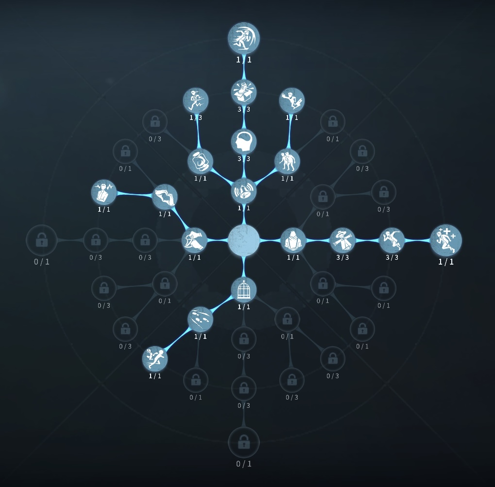
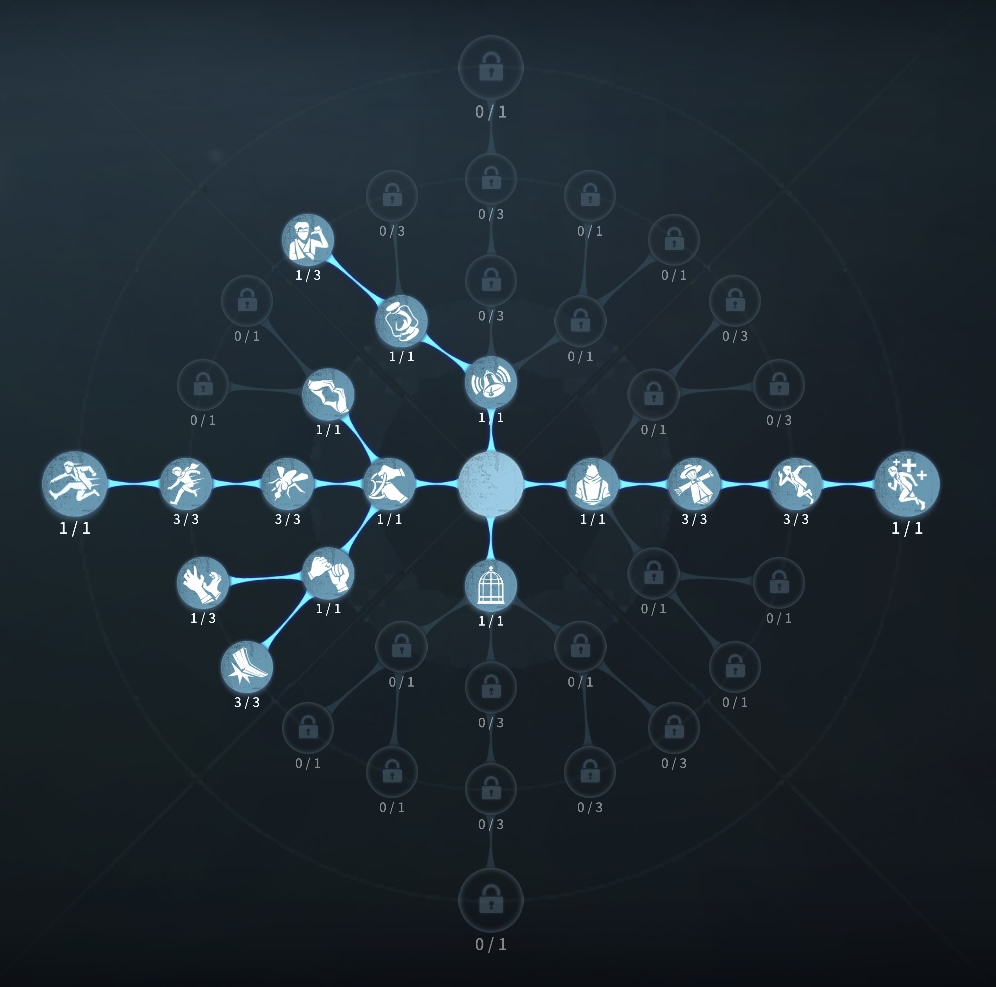

泥棒の評価
ライトを見せることで相手をスタン！
外在特質と特徴
特質1:狡猾
・懐中電灯の耐久量が50%増加（通常時26秒のところを39秒に延長）・ハンターの正面を照らすことで行動不能の照射ゲージが上昇する。ゲージが最大になると*12.7秒間行動不能状態にする。
ハンターを懐中電灯によって行動不能状態にする度に必要な照らす時間が増加していき、最大で2.5秒まで増加する。
・ハンターを任意の方向から照らすことで沈黙の照射ゲージが上昇する。ゲージが最大になると(最短1秒)、ハンターを3秒間沈黙状態にしてスキルを使用できなくする。沈黙状態終了から5秒以内に再度沈黙状態にすると沈黙状態の持続時間が1.5秒ずつ減少していく(最低0秒*2)。
・泥棒はライトをマップ内に設置することができる。設置されたライトは40秒間持続し、懐中電灯と同じ効果でより広い範囲を照らし続ける。ライトによる照射は行動不能状態の進捗のみを増加させる。ハンターは設置されたライトを破壊することができる。
特質2:機敏
走行状態中、倒れた板・窓枠を常に素早く乗り越えることができる。特質3:収集癖
・解読調整の発生確率が10％上昇し、調整の判定が10％縮小する特質4:ピッキング
・サバイバー全員の箱を開ける速度が100％上昇する特徴
泥棒はライトを使って、スタンを狙っていくハンターによってチェイスの質が変わる
使っていく内に分かることもあるので練度が必須になっている。
泥棒の強いポジションを覚えておく必要がある。
個人的に遅乗り越えにならないのがありがたい。
基本的な立ち回り方
1. 追われた時
ライトスタンをどんどん狙っていこう！
ライト使用中が後ろが見えないのでひっかからないように心がける。
板、窓とも乗り越え必須場所には置きライトでスタンを狙いに行こう!
2. 追われない時
解読を進める。
タイミングを見て、チェイス補佐を入れよう！
ハンターの攻撃硬直中はスタンが確定で入る。
（他にもあるので覚えておこう。）
積極的にいれよう！
おすすめの内在人格
フライホイール型人格
この内在人格は、共感と共生効果で救助補助面を完璧にした粘着人格

膝蓋腱反射型人格
この内在人格は、怪力3を振っていることで板当てから板越しに確定でライト硬直を生む人格


みんなのコメント